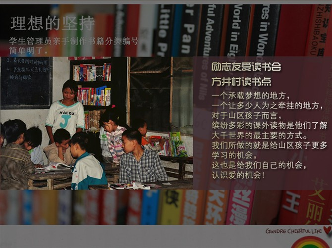
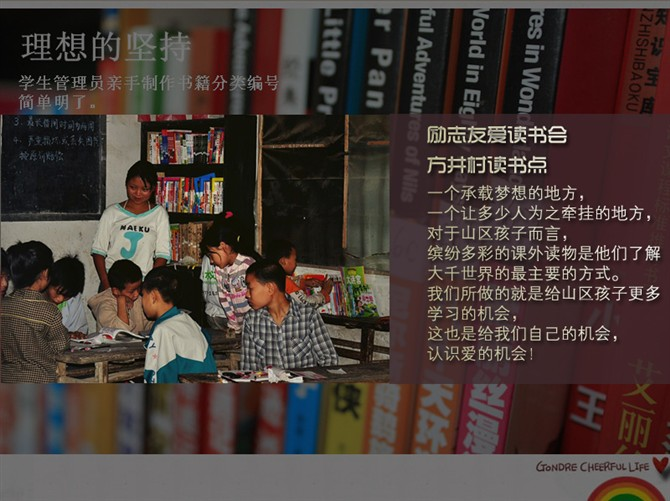

探索之励志友爱读书会
(2012-06-20 19:57:35)励志友爱读书会
成立于2011年8月，是由大学生公益联盟和邻水义工共同发起创意的一个支教延伸公益项目。 目的是给乡村孩子们提供一个发现自我、认识自我并不断得到锻炼的成长平台。
我们在陪同孩子能养成读书、爱书的习惯的同时，关注周末及节、假日山区留守儿童的课余生活。 利用周末的时间，通过读书会的形式，凝聚更多的乡村儿童参与相关活动。
目前主要开展演讲、表演等多样的集体活动。
探索仍在继续……
励志友爱读书会
成立于2011年8月，是由大学生公益联盟和邻水义工共同发起创意的一个支教延伸公益项目。 目的是给乡村孩子们提供一个发现自我、认识自我并不断得到锻炼的成长平台。
我们在陪同孩子能养成读书、爱书的习惯的同时，关注周末及节、假日山区留守儿童的课余生活。 利用周末的时间，通过读书会的形式，凝聚更多的乡村儿童参与相关活动。
目前主要开展演讲、表演等多样的集体活动。
探索仍在继续……